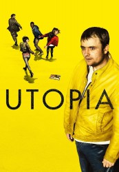

")
 
 IMDB-Wertung: 8.5 / 10
IMDB-Wertung: 8.5 / 10  Tomatometer: 100
Tomatometer: 100  Metascore:
Metascore: 
Eine Gruppe von fünf Menschen sind im Besitz des Manuskripts einer Fortsetzung von "The Utopia Experiments", in der angeblich die verheerendsten Katastrophen des späten 20. Jahrhunderts vorausgesagt wurden. Enthält das neue Werk des gleichen Autors Hinweise auf weitere Katastrophen, die es zu verhindern gilt?Die fünf Comic-Fans werden schließlich mit einer unfassbaren Verschwörung konfrontiert, die ihnen nur eine Überlebenschance lassen wird: ihr altes Leben aufzugeben und unterzutauchen.
Jahr: 2013
Dauer: 59 Minuten
FSK: 18
Land: England Studio: RTL CrimeTonspuren: DD2.0 - ,
Untertitel: Deutsch,
Auflösung: 720p (1280x536) Größe: 128000 MB
Genre: Thriller, Drama, Sci-Fi, Mystery, TV-Serie
Regisseur: Marc Munden, Alex Garcia Lopez, Wayne Yip, Samuel Donovan
Drehbuch: Lutz Hübner
Soundtrack:
Darsteller:
 Adeel Akhtar als Wilson Wilson
Adeel Akhtar als Wilson Wilson Neil Maskell als Arby
Neil Maskell als Arby Alistair Petrie als Geoff
Alistair Petrie als Geoff Geraldine James als Milner
Geraldine James als Milner Emilia Jones als Alice Ward
Emilia Jones als Alice Ward James Fox als Assistant
James Fox als Assistant Anna Madeley als Anya
Anna Madeley als Anya Stephen Rea als Letts
Stephen Rea als Letts Sylvestra Le Touzel als Leah
Sylvestra Le Touzel als Leah Ian McDiarmid als Anton
Ian McDiarmid als Anton Simon McBurney als Donaldson
Simon McBurney als Donaldson Michael Maloney als Donaldson
Michael Maloney als Donaldson Emil Hostina als Marius
Emil Hostina als Marius Eleanor Matsuura als Bev
Eleanor Matsuura als Bev Gerard Monaco als Joe
Gerard Monaco als Joe Steven Robertson als Terrence
Steven Robertson als Terrence Sacha Dhawan als Paul
Sacha Dhawan als Paul Allan Corduner als Ross
Allan Corduner als Ross Tom Burke als Philip Carvel
Tom Burke als Philip Carvel Rose Leslie als Young Milner
Rose Leslie als Young Milner Tim McInnerny als Airey Neave
Tim McInnerny als Airey Neave David Calder als Dobri Gorski
David Calder als Dobri Gorski Kevin Eldon als Tony Bradley
Kevin Eldon als Tony Bradley Michael Smiley als Detective Reynolds
Michael Smiley als Detective Reynolds Sope Dirisu als Roy
Sope Dirisu als Roy Stewart Scudamore als Milton Wilson
Stewart Scudamore als Milton Wilson Diana Hardcastle als CIA Woman
Diana Hardcastle als CIA Woman Mitchell Mullen als Monroe
Mitchell Mullen als Monroe Pixie Davies als Amanda
Pixie Davies als Amanda Corey Johnson als Niall
Corey Johnson als Niall Bruce Mackinnon als Surgeon 2
Bruce Mackinnon als Surgeon 2Datei: X:\FSK18-Serien\Utopia\S01\Utopia S01E01.mkv seit 17.01.2017
Festplatte: FSK18
 Es gibt insgesamt 17 Filme in der Gruppe 'FSK18-Serien'
Es gibt insgesamt 17 Filme in der Gruppe 'FSK18-Serien'